Optimization (scipy.optimize)¶
The scipy.optimize package provides several commonly used
optimization algorithms. A detailed listing is available:
scipy.optimize (can also be found by help(scipy.optimize)).
The module contains:
- Unconstrained and constrained minimization of multivariate scalar
functions (
minimize()) using a variety of algorithms (e.g. BFGS, Nelder-Mead simplex, Newton Conjugate Gradient, COBYLA or SLSQP) - Global (brute-force) optimization routines (e.g.,
anneal(),basinhopping()) - Least-squares minimization (
leastsq()) and curve fitting (curve_fit()) algorithms - Scalar univariate functions minimizers (
minimize_scalar()) and root finders (newton()) - Multivariate equation system solvers (
root()) using a variety of algorithms (e.g. hybrid Powell, Levenberg-Marquardt or large-scale methods such as Newton-Krylov).
Below, several examples demonstrate their basic usage.
Unconstrained minimization of multivariate scalar functions (minimize())¶
The minimize() function provides a common interface to unconstrained
and constrained minimization algorithms for multivariate scalar functions
in scipy.optimize. To demonstrate the minimization function consider the
problem of minimizing the Rosenbrock function of  variables:
variables:
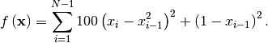
The minimum value of this function is 0 which is achieved when 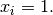
Note that the Rosenbrock function and its derivatives are included in scipy.optimize. The implementations shown in the following sections provide examples of how to define an objective function as well as its jacobian and hessian functions.
Nelder-Mead Simplex algorithm (method='Nelder-Mead')¶
In the example below, the minimize() routine is used
with the Nelder-Mead simplex algorithm (selected through the method
parameter):
>>> import numpy as np
>>> from scipy.optimize import minimize
>>> def rosen(x):
... """The Rosenbrock function"""
... return sum(100.0*(x[1:]-x[:-1]**2.0)**2.0 + (1-x[:-1])**2.0)
>>> x0 = np.array([1.3, 0.7, 0.8, 1.9, 1.2])
>>> res = minimize(rosen, x0, method='nelder-mead',
... options={'xtol': 1e-8, 'disp': True})
Optimization terminated successfully.
Current function value: 0.000000
Iterations: 339
Function evaluations: 571
>>> print(res.x)
[ 1. 1. 1. 1. 1.]
The simplex algorithm is probably the simplest way to minimize a fairly well-behaved function. It requires only function evaluations and is a good choice for simple minimization problems. However, because it does not use any gradient evaluations, it may take longer to find the minimum.
Another optimization algorithm that needs only function calls to find
the minimum is Powell’s method available by setting method='powell' in
minimize().
Broyden-Fletcher-Goldfarb-Shanno algorithm (method='BFGS')¶
In order to converge more quickly to the solution, this routine uses the gradient of the objective function. If the gradient is not given by the user, then it is estimated using first-differences. The Broyden-Fletcher-Goldfarb-Shanno (BFGS) method typically requires fewer function calls than the simplex algorithm even when the gradient must be estimated.
To demonstrate this algorithm, the Rosenbrock function is again used. The gradient of the Rosenbrock function is the vector:
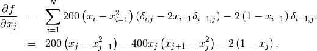
This expression is valid for the interior derivatives. Special cases are
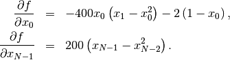
A Python function which computes this gradient is constructed by the code-segment:
>>> def rosen_der(x):
... xm = x[1:-1]
... xm_m1 = x[:-2]
... xm_p1 = x[2:]
... der = np.zeros_like(x)
... der[1:-1] = 200*(xm-xm_m1**2) - 400*(xm_p1 - xm**2)*xm - 2*(1-xm)
... der[0] = -400*x[0]*(x[1]-x[0]**2) - 2*(1-x[0])
... der[-1] = 200*(x[-1]-x[-2]**2)
... return der
This gradient information is specified in the minimize() function
through the jac parameter as illustrated below.
>>> res = minimize(rosen, x0, method='BFGS', jac=rosen_der,
... options={'disp': True})
Optimization terminated successfully.
Current function value: 0.000000
Iterations: 51
Function evaluations: 63
Gradient evaluations: 63
>>> print(res.x)
[ 1. 1. 1. 1. 1.]
Newton-Conjugate-Gradient algorithm (method='Newton-CG')¶
The method which requires the fewest function calls and is therefore often the fastest method to minimize functions of many variables uses the Newton-Conjugate Gradient algorithm. This method is a modified Newton’s method and uses a conjugate gradient algorithm to (approximately) invert the local Hessian. Newton’s method is based on fitting the function locally to a quadratic form:
![\[ f\left(\mathbf{x}\right)\approx f\left(\mathbf{x}_{0}\right)+\nabla f\left(\mathbf{x}_{0}\right)\cdot\left(\mathbf{x}-\mathbf{x}_{0}\right)+\frac{1}{2}\left(\mathbf{x}-\mathbf{x}_{0}\right)^{T}\mathbf{H}\left(\mathbf{x}_{0}\right)\left(\mathbf{x}-\mathbf{x}_{0}\right).\]](../_images/math/ebbb713bf5fa52b999a62781e6a1de78434a0f29.png)
where  is a matrix of second-derivatives (the Hessian). If the Hessian is
positive definite then the local minimum of this function can be found
by setting the gradient of the quadratic form to zero, resulting in
is a matrix of second-derivatives (the Hessian). If the Hessian is
positive definite then the local minimum of this function can be found
by setting the gradient of the quadratic form to zero, resulting in
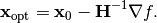
The inverse of the Hessian is evaluated using the conjugate-gradient method. An example of employing this method to minimizing the Rosenbrock function is given below. To take full advantage of the Newton-CG method, a function which computes the Hessian must be provided. The Hessian matrix itself does not need to be constructed, only a vector which is the product of the Hessian with an arbitrary vector needs to be available to the minimization routine. As a result, the user can provide either a function to compute the Hessian matrix, or a function to compute the product of the Hessian with an arbitrary vector.
Full Hessian example:¶
The Hessian of the Rosenbrock function is
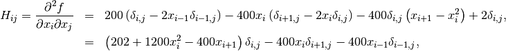
if ![i,j\in\left[1,N-2\right]](../_images/math/88efcf02be7d0efe3315711c5b7e8e5a1e807085.png) with 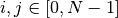 defining the
with 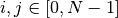 defining the  matrix. Other non-zero entries of the matrix are
matrix. Other non-zero entries of the matrix are

For example, the Hessian when 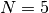 is
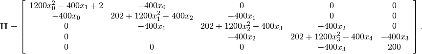
The code which computes this Hessian along with the code to minimize the function using Newton-CG method is shown in the following example:
>>> def rosen_hess(x):
... x = np.asarray(x)
... H = np.diag(-400*x[:-1],1) - np.diag(400*x[:-1],-1)
... diagonal = np.zeros_like(x)
... diagonal[0] = 1200*x[0]**2-400*x[1]+2
... diagonal[-1] = 200
... diagonal[1:-1] = 202 + 1200*x[1:-1]**2 - 400*x[2:]
... H = H + np.diag(diagonal)
... return H
>>> res = minimize(rosen, x0, method='Newton-CG',
... jac=rosen_der, hess=rosen_hess,
... options={'avextol': 1e-8, 'disp': True})
Optimization terminated successfully.
Current function value: 0.000000
Iterations: 19
Function evaluations: 22
Gradient evaluations: 19
Hessian evaluations: 19
>>> print(res.x)
[ 1. 1. 1. 1. 1.]
Hessian product example:¶
For larger minimization problems, storing the entire Hessian matrix can
consume considerable time and memory. The Newton-CG algorithm only needs
the product of the Hessian times an arbitrary vector. As a result, the user
can supply code to compute this product rather than the full Hessian by
giving a hess function which take the minimization vector as the first
argument and the arbitrary vector as the second argument (along with extra
arguments passed to the function to be minimized). If possible, using
Newton-CG with the Hessian product option is probably the fastest way to
minimize the function.
In this case, the product of the Rosenbrock Hessian with an arbitrary vector is not difficult to compute. If is the arbitrary vector, then 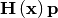 has elements:
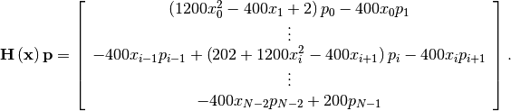
Code which makes use of this Hessian product to minimize the
Rosenbrock function using minimize() follows:
>>> def rosen_hess_p(x,p):
... x = np.asarray(x)
... Hp = np.zeros_like(x)
... Hp[0] = (1200*x[0]**2 - 400*x[1] + 2)*p[0] - 400*x[0]*p[1]
... Hp[1:-1] = -400*x[:-2]*p[:-2]+(202+1200*x[1:-1]**2-400*x[2:])*p[1:-1] \
... -400*x[1:-1]*p[2:]
... Hp[-1] = -400*x[-2]*p[-2] + 200*p[-1]
... return Hp
>>> res = minimize(rosen, x0, method='Newton-CG',
... jac=rosen_der, hess=rosen_hess_p,
... options={'avextol': 1e-8, 'disp': True})
Optimization terminated successfully.
Current function value: 0.000000
Iterations: 20
Function evaluations: 23
Gradient evaluations: 20
Hessian evaluations: 44
>>> print(res.x)
[ 1. 1. 1. 1. 1.]
Constrained minimization of multivariate scalar functions (minimize())¶
The minimize() function also provides an interface to several
constrained minimization algorithm. As an example, the Sequential Least
SQuares Programming optimization algorithm (SLSQP) will be considered here.
This algorithm allows to deal with constrained minimization problems of the
form:
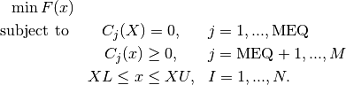
As an example, let us consider the problem of maximizing the function:
![\[ f(x, y) = 2 x y + 2 x - x^2 - 2 y^2 \]](../_images/math/386c3338f077844da5c04055cba17488a8a141ee.png)
subject to an equality and an inequality constraints defined as:
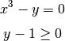
The objective function and its derivative are defined as follows.
>>> def func(x, sign=1.0):
... """ Objective function """
... return sign*(2*x[0]*x[1] + 2*x[0] - x[0]**2 - 2*x[1]**2)
>>> def func_deriv(x, sign=1.0):
... """ Derivative of objective function """
... dfdx0 = sign*(-2*x[0] + 2*x[1] + 2)
... dfdx1 = sign*(2*x[0] - 4*x[1])
... return np.array([ dfdx0, dfdx1 ])
Note that since minimize() only minimizes functions, the sign
parameter is introduced to multiply the objective function (and its
derivative by -1) in order to perform a maximization.
Then constraints are defined as a sequence of dictionaries, with keys
type, fun and jac.
>>> cons = ({'type': 'eq',
... 'fun' : lambda x: np.array([x[0]**3 - x[1]]),
... 'jac' : lambda x: np.array([3.0*(x[0]**2.0), -1.0])},
... {'type': 'ineq',
... 'fun' : lambda x: np.array([x[1] - 1]),
... 'jac' : lambda x: np.array([0.0, 1.0])})
Now an unconstrained optimization can be performed as:
>>> res = minimize(func, [-1.0,1.0], args=(-1.0,), jac=func_deriv,
... method='SLSQP', options={'disp': True})
Optimization terminated successfully. (Exit mode 0)
Current function value: -2.0
Iterations: 4
Function evaluations: 5
Gradient evaluations: 4
>>> print(res.x)
[ 2. 1.]
and a constrained optimization as:
>>> res = minimize(func, [-1.0,1.0], args=(-1.0,), jac=func_deriv,
... constraints=cons, method='SLSQP', options={'disp': True})
Optimization terminated successfully. (Exit mode 0)
Current function value: -1.00000018311
Iterations: 9
Function evaluations: 14
Gradient evaluations: 9
>>> print(res.x)
[ 1.00000009 1. ]
Least-square fitting (leastsq())¶
All of the previously-explained minimization procedures can be used to solve a least-squares problem provided the appropriate objective function is constructed. For example, suppose it is desired to fit a set of data 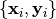 to a known model, 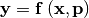 where is a vector of parameters for the model that need to be found. A common method for determining which parameter vector gives the best fit to the data is to minimize the sum of squares of the residuals. The residual is usually defined for each observed data-point as
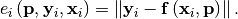
An objective function to pass to any of the previous minization algorithms to obtain a least-squares fit is.
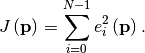
The leastsq algorithm performs this squaring and summing of the
residuals automatically. It takes as an input argument the vector
function  and returns the
value of which minimizes
and returns the
value of which minimizes
 directly. The user is also encouraged to provide the Jacobian matrix
of the function (with derivatives down the columns or across the
rows). If the Jacobian is not provided, it is estimated.
directly. The user is also encouraged to provide the Jacobian matrix
of the function (with derivatives down the columns or across the
rows). If the Jacobian is not provided, it is estimated.
An example should clarify the usage. Suppose it is believed some measured data follow a sinusoidal pattern
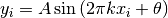
where the parameters 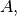  , and
, and  are unknown. The residual vector is
are unknown. The residual vector is
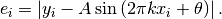
By defining a function to compute the residuals and (selecting an appropriate starting position), the least-squares fit routine can be used to find the best-fit parameters 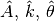. This is shown in the following example:
Univariate function minimizers (minimize_scalar())¶
Often only the minimum of an univariate function (i.e. a function that
takes a scalar as input) is needed. In these circumstances, other
optimization techniques have been developed that can work faster. These are
accessible from the minimize_scalar() function which proposes several
algorithms.
Unconstrained minimization (method='brent')¶
There are actually two methods that can be used to minimize an univariate
function: brent and golden, but golden is included only for academic
purposes and should rarely be used. These can be respectively selected
through the method parameter in minimize_scalar(). The brent
method uses Brent’s algorithm for locating a minimum. Optimally a bracket
(the bs parameter) should be given which contains the minimum desired. A
bracket is a triple 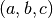 such that 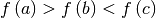 and 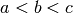 . If this is not given, then alternatively two starting points can
be chosen and a bracket will be found from these points using a simple
marching algorithm. If these two starting points are not provided 0 and
1 will be used (this may not be the right choice for your function and
result in an unexpected minimum being returned).
Here is an example:
>>> from scipy.optimize import minimize_scalar
>>> f = lambda x: (x - 2) * (x + 1)**2
>>> res = minimize_scalar(f, method='brent')
>>> print(res.x)
1.0
Bounded minimization (method='bounded')¶
Very often, there are constraints that can be placed on the solution space
before minimization occurs. The bounded method in minimize_scalar()
is an example of a constrained minimization procedure that provides a
rudimentary interval constraint for scalar functions. The interval
constraint allows the minimization to occur only between two fixed
endpoints, specified using the mandatory bs parameter.
For example, to find the minimum of 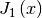 near
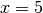 , minimize_scalar() can be called using the interval
![\left[ 4, 7 \right]](../_images/math/355c708eb358aeaaa9fef10f9ca694964686ae16.png) as a constraint. The result is
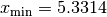 :
as a constraint. The result is
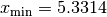 :
>>> from scipy.special import j1
>>> res = minimize_scalar(j1, bs=(4, 7), method='bounded')
>>> print(res.x)
5.33144184241
Root finding¶
Scalar functions¶
If one has a single-variable equation, there are four different root
finding algorithms that can be tried. Each of these algorithms requires the
endpoints of an interval in which a root is expected (because the function
changes signs). In general brentq is the best choice, but the other
methods may be useful in certain circumstances or for academic purposes.
Fixed-point solving¶
A problem closely related to finding the zeros of a function is the
problem of finding a fixed-point of a function. A fixed point of a
function is the point at which evaluation of the function returns the
point: 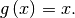 Clearly the fixed point of  is the root of 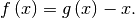
Equivalently, the root of
is the root of 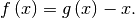
Equivalently, the root of  is the fixed_point of
is the fixed_point of
 The routine
The routine
fixed_point provides a simple iterative method using Aitkens
sequence acceleration to estimate the fixed point of given a
starting point.
Sets of equations¶
Finding a root of a set of non-linear equations can be achieve using the
root() function. Several methods are available, amongst which hybr
(the default) and lm which respectively use the hybrid method of Powell
and the Levenberg-Marquardt method from MINPACK.
The following example considers the single-variable transcendental equation
![\[ x+2\cos\left(x\right)=0,\]](../_images/math/9a7ded29663f339b65d4699427ccc3481689f672.png)
a root of which can be found as follows:
>>> import numpy as np
>>> from scipy.optimize import root
>>> def func(x):
... return x + 2 * np.cos(x)
>>> sol = root(func, 0.3)
>>> sol.x
array([-1.02986653])
>>> sol.fun
array([ -6.66133815e-16])
Consider now a set of non-linear equations
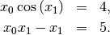
We define the objective function so that it also returns the Jacobian and
indicate this by setting the jac parameter to True. Also, the
Levenberg-Marquardt solver is used here.
>>> def func2(x):
... f = [x[0] * np.cos(x[1]) - 4,
... x[1]*x[0] - x[1] - 5]
... df = np.array([[np.cos(x[1]), -x[0] * np.sin(x[1])],
... [x[1], x[0] - 1]])
... return f, df
>>> sol = root(func2, [1, 1], jac=True, method='lm')
>>> sol.x
array([ 6.50409711, 0.90841421])
Root finding for large problems¶
Methods hybr and lm in root() cannot deal with a very large
number of variables (N), as they need to calculate and invert a dense N
x N Jacobian matrix on every Newton step. This becomes rather inefficient
when N grows.
Consider for instance the following problem: we need to solve the
following integrodifferential equation on the square
![[0,1]\times[0,1]](../_images/math/9ad5ac07b1e9afa997294b017760fe6fc35c569c.png) :
:

with the boundary condition  on the upper edge and
on the upper edge and
 elsewhere on the boundary of the square. This can be done
by approximating the continuous function P by its values on a grid,
elsewhere on the boundary of the square. This can be done
by approximating the continuous function P by its values on a grid,
 , with a small grid spacing
h. The derivatives and integrals can then be approximated; for
instance 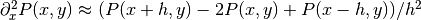. The problem is then equivalent to finding the root of
some function
, with a small grid spacing
h. The derivatives and integrals can then be approximated; for
instance 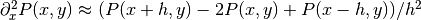. The problem is then equivalent to finding the root of
some function residual(P), where P is a vector of length
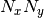.
Now, because can be large, methods hybr or lm in
root() will take a long time to solve this problem. The solution can
however be found using one of the large-scale solvers, for example
krylov, broyden2, or anderson. These use what is known as the
inexact Newton method, which instead of computing the Jacobian matrix
exactly, forms an approximation for it.
The problem we have can now be solved as follows:
Still too slow? Preconditioning.¶
When looking for the zero of the functions 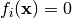,
i = 1, 2, …, N, the krylov solver spends most of its
time inverting the Jacobian matrix,
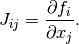
If you have an approximation for the inverse matrix
 , you can use it for preconditioning the
linear inversion problem. The idea is that instead of solving
, you can use it for preconditioning the
linear inversion problem. The idea is that instead of solving
 one solves
one solves  : since
matrix 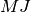 is “closer” to the identity matrix than
: since
matrix 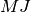 is “closer” to the identity matrix than  is, the equation should be easier for the Krylov method to deal with.
is, the equation should be easier for the Krylov method to deal with.
The matrix M can be passed to root() with method krylov as an
option options['jac_options']['inner_M']. It can be a (sparse) matrix
or a scipy.sparse.linalg.LinearOperator instance.
For the problem in the previous section, we note that the function to solve consists of two parts: the first one is application of the Laplace operator, 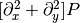, and the second is the integral. We can actually easily compute the Jacobian corresponding to the Laplace operator part: we know that in one dimension
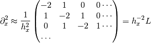
so that the whole 2-D operator is represented by

The matrix 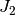 of the Jacobian corresponding to the integral
is more difficult to calculate, and since all of it entries are
nonzero, it will be difficult to invert.  on the other hand
is a relatively simple matrix, and can be inverted by
on the other hand
is a relatively simple matrix, and can be inverted by
scipy.sparse.linalg.splu (or the inverse can be approximated by
scipy.sparse.linalg.spilu). So we are content to take
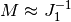 and hope for the best.
In the example below, we use the preconditioner  .
.
Resulting run, first without preconditioning:
0: |F(x)| = 803.614; step 1; tol 0.000257947
1: |F(x)| = 345.912; step 1; tol 0.166755
2: |F(x)| = 139.159; step 1; tol 0.145657
3: |F(x)| = 27.3682; step 1; tol 0.0348109
4: |F(x)| = 1.03303; step 1; tol 0.00128227
5: |F(x)| = 0.0406634; step 1; tol 0.00139451
6: |F(x)| = 0.00344341; step 1; tol 0.00645373
7: |F(x)| = 0.000153671; step 1; tol 0.00179246
8: |F(x)| = 6.7424e-06; step 1; tol 0.00173256
Residual 3.57078908664e-07
Evaluations 317
and then with preconditioning:
0: |F(x)| = 136.993; step 1; tol 7.49599e-06
1: |F(x)| = 4.80983; step 1; tol 0.00110945
2: |F(x)| = 0.195942; step 1; tol 0.00149362
3: |F(x)| = 0.000563597; step 1; tol 7.44604e-06
4: |F(x)| = 1.00698e-09; step 1; tol 2.87308e-12
Residual 9.29603061195e-11
Evaluations 77
Using a preconditioner reduced the number of evaluations of the
residual function by a factor of 4. For problems where the
residual is expensive to compute, good preconditioning can be crucial
— it can even decide whether the problem is solvable in practice or
not.
Preconditioning is an art, science, and industry. Here, we were lucky in making a simple choice that worked reasonably well, but there is a lot more depth to this topic than is shown here.
References
Some further reading and related software:
| [KK] | D.A. Knoll and D.E. Keyes, “Jacobian-free Newton-Krylov methods”, J. Comp. Phys. 193, 357 (2003). |
| [PP] | PETSc http://www.mcs.anl.gov/petsc/ and its Python bindings http://code.google.com/p/petsc4py/ |
| [AMG] | PyAMG (algebraic multigrid preconditioners/solvers) http://code.google.com/p/pyamg/ |